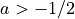

xopto.pf.mgk module¶
- class MGk(gg: float, a: float, b: float)[source]¶
Bases:
xopto.pf.pfbase.PfBaseModified Gegenbauer kernel scattering phase function.
- Parameters
gg (float) – Parameter of the Gegenbauer kernel scattering phase function (
 ).
).a (float) – Parameter of the Gegenbauer kernel scattering phase function (). A value of 0.5 produces the Henyey-Greenstein scattering phase function.
b (float) – Fractional contribution of the Gegenbauer kernel scattering phase function.
Examples
Modified Gegenbauer kernel scattering phase function fo anisotropy factors g = {0, 0.3 0.5, 0.8, 0.9, 0.95}, a = 0.5 and b=0.5.
>>> import numpy as np >>> from matplotlib import pyplot as pp >>> >>> cos_theta = np.linspace(-1.0, 1.0, 1000) >>> a = 0.5 >>> >>> pp.figure() >>> for g in [0.0, 0.3, 0.5, 0.8, 0.9, 0.95]: >>> pp.semilogy(cos_theta, MGk(g, 0.5)(cos_theta), label='b=0.5, g={}'.format(g)) >>> pp.legend()